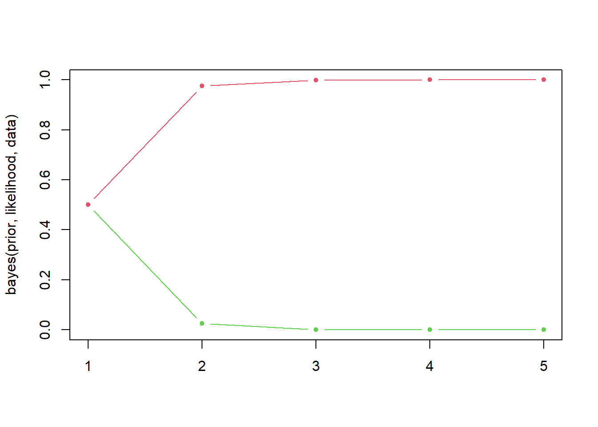
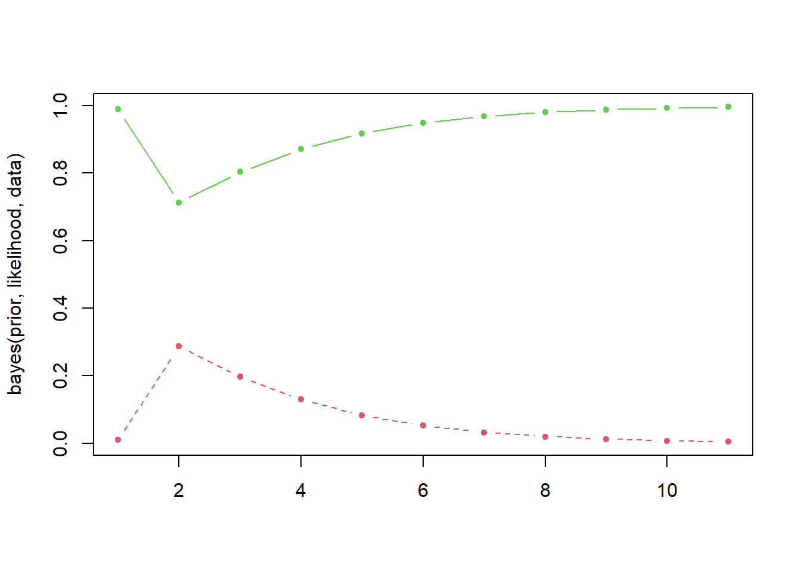

贝叶斯与概率推理
Bayes系列的笔记主要基于Learning-Probabilistic-Graphical-Models-in-R.
皮埃尔-西蒙·拉普拉斯(Pierre-Simon Laplace,1749-1827)，法国数学家，也是有史以来最伟大的科学家之被认为是第一批理解数据收集重要性的人:他发现了数 -，不据不可靠，有不确定性，也就是今天说的有噪声。他也是第一个研究使用概率来处理不确定性等问题，并表示事件或信息信念度的人。
在他的论文《概率的哲学》（Essai philosophique sur lesprobabilités,1814）中，拉普拉斯给出了最初的支持新老数据推理的数学系统，其中的用户信念会在新数据可用的时候得到更新和改进。
概率是表示和处理不确定性的严密的数学方法。
概率是一种量化常识推理和信念程度的工具。
概率图模型，从数学的角度看，是一种表示几个变量概率分布的方法，也叫作联合概率分布。换句话说，它是一种表示几个变量共同出现的数值信念的工具。基于这种理解，虽然概率图模型看起来很简单，但是概率图模型强调的是对于许多变量概率分布的表示。
1 联合概率分布
当我们同时考虑两个试验（投掷硬币2次和投掷一个骰子）的时候，我们对同时获得0、1或2的概率以及1、2、3、4、5或6的点数概率更感兴趣。这两个同时考虑的随机变量的概率分布写作 \(P(N, D)\) ，称作联合概率分布。
一个概率图模型就是一个联合概率分布。除此之外，别无他物。
联合概率分布的最后一个重要概念是边缘化（marginalization）。
联合分布\(P(X,Y)\)的边缘分布\(P(X)\)可以通过下列操作获得：
\[P(X)=\sum_y P(X,Y)\]
当Y值是连续值是，边缘化可以写作：
\(P(X)=\int_{y} P(X,y) \mathrm{d}y\)。
2 贝叶斯规则
2.1 条件概率
条件概率是指在知道其他时间发生的条件下当前事件的概率。很明显，两个事件必须某种程度的依赖，否则一个事件的发生不会影响另一个事件。
条件概率转化为公式如下：
\(P(X|Y)=\frac{P(X,Y)}{P(Y)}\)和\(P(Y|X)=\frac{P(X,Y)}{P(X)}\)
2.2 贝叶斯公式
从上述两个公式推导出贝叶斯公式：
\(P(X|Y)=\frac{{P(Y|X)}·P(X)}{P(Y)}\)
在这个公式中，我们把 \(P(X|Y)\) 叫做是给定\(Y\)下\(X\)的后验分布，因此，\(P(X)\) 叫做后验分布。
3 例子：机器与灯泡
在构建贝叶斯统计的时候，我们总是需要建立两个部件：
- 先验分布
- 似然率
先验分布使我们关于机器工作状态的初试信念。我们确定了第一个刻画机器状态的随机变量 \(M\) 。这个随机变量有两个状态 \({working,broken}\) 。我们相信机器是好的，是可以正常工作的，所以先验分布如下：
- \(P(M=working)=0.99\)
- \(P(M=broken)=0.01\)
3.1 R代码的实现
先验分布、似然率和数据序列
贝叶斯更新函数
bayes <-function(prior, likelihood, data)
{
posterior <-matrix(0, nrow =length(data), ncol =length(prior))
dimnames(posterior) <-list(data, names(prior))
initial_prior <-prior
for (i in 1:length(data))
{
posterior[i, ] <-
prior *likelihood[, data[i]]/
sum(prior *likelihood[, data[i]])
prior <-posterior[i, ]
}
return(rbind(initial_prior, posterior))
}- 创建一个矩阵，存储后验分布的连续计算结果。
然后对于每一个数据，给定当前先验概率计算后验概率：和之前的一样，你可以看到贝叶斯公式的R代码。
最后，新的先验概率是当前的后验概率，而且同样的过程可以迭代。
分布的演化情况
随着坏灯泡的增多，机器正常的概率快速下降（绿色线）。
如果我们换一个先验分布，假设我们不知道机器是否可以正常工作，即好坏参半，我们给定如下概率：
prior <- c(working = 0.5, broken = 0.5)
matplot(bayes(prior, likelihood, data), t ='b',
lty =1, pch =20,
col =c(3, 2))
这个曲线快速收敛，机器有问题的概率很高。
再对数据变换一下，假设机器正常工作的概率是99%，我们观察10个灯泡，其中一个灯泡是坏的：
prior =c(working =0.99, broken =0.01)
data =c("bad", "good", "good", "good", "good", "good", "good","good", "good", "good")
matplot(bayes(prior, likelihood, data), t ='b', pch =20, col =c(3, 2))
算法在第一个灯泡处犹豫了一下，因为这么好的机器不太可能生产出一个坏灯泡。然后它又收敛到很高的概率，因为好灯泡的序列不会预示任何问题。